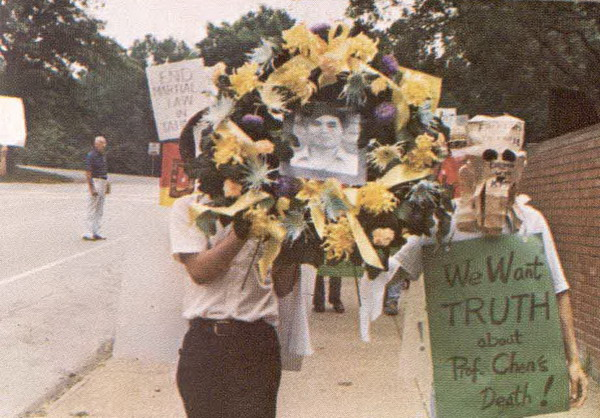
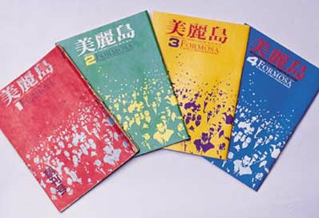
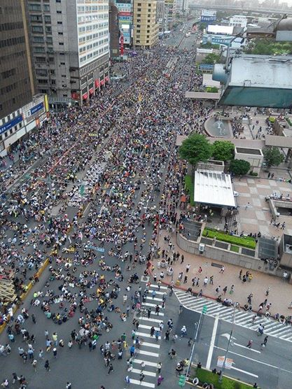

在自己的學校裡繫上象徵反核的黃絲帶，成為校園內反核聲音的一景。
圖片來源：高師大性別所，青年聯合陣線提供。

為了瞭解他，我們開始收集資料，回顧他的人生，我們看見林宅血案、美麗島雜誌社、1992年爭取總統直選公民運動。
今日，我們以報導者身份站在抗爭現場，記錄民主實踐的多元行動，也深受新聞自由所保護，但二三十年前的街頭，對我們來說卻如此陌生。
這一份專題，我們將藉由青年的視野，瞭解為什麼有人為林義雄感動，願意為他發聲。
也透過林義雄的人生，作為探尋臺灣過去白色恐怖歷史的路徑，以他身上遭逢的壓迫與傷痕，連結歷史課本中每一個模糊身影的真實處境。
這並非一份完整的白色恐怖報告書，但我們欲以這份專題化為一把鑰匙，開啟通往那個失落且失語年代的門。
我們一直在想像、實驗並形塑更有挑戰性的媒體形貌。
也盼讀者能不吝於給予我們任何建議，與我們並肩而行。
慈林教育基金會、邱萬興先生、柯金源先生提供珍貴影像資料與建議。
藉由製作這份專題，我們也一點一點接近我們從未記憶的臺灣歷史，也在撞見郭雨新、陳文成、鄭南榕等名字時，重新與自己的人生脈絡對話。
( 零傳媒 )
梁德珊、李映昕、吳震威
但是年輕一代的感受卻較為淡薄。林義雄是誰？他跟年輕人有何關係？如果青年世代想要重新認識林義雄，應該用什麼角度來看那段歷史？
我們邀請了五位年輕受訪者，請跟著他們，一起來認識林義雄。

更該去了解邁向民主的過程』
「你自己念的高中，你坐在那個地方，你就會想說，哇靠我的學校竟然就這樣被抄掉了。理由是學校裡面可能藏了汽油彈，而你根本不知道到底有沒有，警總就衝進來，把學校老師抄走…」回顧自己高一時為了編校刊，無意間翻到與228事件相關的校史，柳林瑋說，他一邊讀一邊起雞皮疙瘩。
坐在延平中學的教室裡，與相隔近70年的歷史產生連結，對當時才16歲的柳林瑋來說，是非常震撼的事。他在研讀校史過程中，發現自己的學校曾有段重要歷史。創校的朱昭陽、林獻堂等台籍菁英就是「那個時代的人」，他們懷抱辦學理想，後來卻面對政府強制停辦學校，讓他感動也感慨，也開始主動去瞭解那段歷史、閱讀相關書籍。
「我們20、30歲的這些人，生出來莫名其妙就有了民主，所以我們若不去回顧當初是怎麼取得民主的，那我們就會很容易失去戒心，讓它被拿走了。」柳林瑋認為，所有年輕人都應該去瞭解臺灣如何取得民主的過程，而要去認識那段歷史，就不能不談林義雄。
柳林瑋笑說，自己是林義雄的「迷弟」，林義雄對於政治的想象、長年堅守理想的人格，都讓他欽佩。他說，林義雄很早便認為政黨應由為了取得政權的人所組成，一個政黨不僅不該有黨員，更不需為了身為黨的忠貞黨員為榮。他說，林義雄的說法很符合他對政治的想像。「如果政治人物是我們的公僕的話，我們幹嘛去崇拜、信仰我們的公僕，我們應該信仰自己的理念，去監督自己的公僕。」他解釋。
他也表示，林義雄對事件皆反覆思辨、長期身體力行堅持理想，也未因握有權力而腐化，都在在見證林義雄「不要看我一時，要看我一生」的名言。柳林瑋說，能要求別人用一生去檢視自己並不容易。林義雄經歷林宅血案的傷痛與打壓，仍堅持數十年，政治人物有這樣的風骨，便是令他景仰的主要原因。
談到對林義雄4月22日起長達8天禁食行動的看法？作為一名積極參與社會運動的醫師，柳林瑋對這個問題停頓許久才緩緩回答，「任何一個人自殺，其實我都不會認同。但是我還是敬佩林義雄的選擇，他的理想沒有變，我相信人可以為了理想的偉大價值而死。」面對困難的倫理議題，他認為，為了強大的信念與不公義的政權對抗，以自己的肉身承載政府的顢頇與蠻幹，雖然令他於心不忍，但他仍支持林義雄為了自己深信的價值而行動。
走在前人為爭取民主自由所開闢的路途上，柳林瑋坦言，自己雖獲得許多啓發，卻遠不及他們偉大。2013年8月3日萬人凱道送仲丘晚會中，眾人舉起手機、形成一遍螢光海的場景，他的靈感便是來自朱昭陽在延平學院開學時所闡釋的精神，對柳林瑋而言，「給這混亂、昏昧的社會提供一線光明，我們要當荒野暗夜中的螢光」已從他16歲時瞻仰的精神，轉化成自己做運動的方式。
「你知道要一個男人，在他媽媽跟女兒被砍死的地方絕食，這不是開玩笑。」操著流利國罵而被網友稱為「人間自走機關槍」的李柏璋。談到林義雄時，他卻說得很緩慢。
李柏璋說，他成長在一個並不諱言談論政治的家庭。懂事以來，爸爸常對他訴說林義雄的故事。回想第一次看到林義雄在立法院前靜坐的新聞，李柏璋坦言，他也一度懷疑林義雄在炒新聞、操作議題，甚至是在為前途鋪路，「但是我真的去瞭解他以後，才發現我錯怪林義雄了。」
藉由自己查上網資料、詢問爸爸，李柏璋進一步得知林宅血案經過，也在關心核四議題上，與林義雄產生連結。他說，林義雄因為是美麗島事件中最不肯屈服的人，而承受苦難，但林義雄沒有畏懼退縮，也不去報復，而是一心一意為臺灣奉獻。李柏璋認為，沒有瞭解林義雄的理念、遭遇的事，理解其禁食所展現的決心，「都不應該先去批評林義雄這個人。」
聊到林義雄多次為核四議題苦行、再次絕食。李柏璋說，當他在義光教會外，繫上黃絲帶時，自己感慨很深，林義雄今年都已72歲，敢出來絕食，就是有一定覺悟，是真的想拿這條性命，換得更多人來對核四議題的重視。但看著一條生命凋零，李柏璋也難掩失落地說，「卻好像沒有辦法為他做些什麼，明明有那麼多人站出來了。」
他也表示，4月25日那天，群眾之所以在立委開會結束後用身軀阻擋立委座車，除了為督促政府改變核四政策，會利用這樣的手段，也是源於想要挽救林義雄生命的焦慮。
「我有時候真的為他覺得很不值得，他這輩子已經為臺灣奉獻太多了。」停頓許久，李柏璋再點起一根煙後緩緩地說。訪談這天，已是林義雄禁食第6天，遲至深夜，反核群眾仍在佔領忠孝西路靜坐抗議。
「410退場那天，我第一次見到林先生，他給了我一個擁抱，但什麼話都沒有說。我那時候很激動，因為你知道這個人在歷史上很重要，他很努力在做一些事情，而且就在你眼前。」林飛帆說。
太陽花學運退場當天，林飛帆在議場外，與靜坐聲援學生多天的林義雄見面。媒體報導林飛帆眼眶泛紅，後來林飛帆在臉書上自述，那是因為他早就知道林義雄即將禁食。
「以前沒有見過林先生，對他的印象都是想像出來的」，從小聽爸爸談論政治的林飛帆，在家庭的耳濡目染中，接觸到林義雄、鄭南榕等人的故事。但即使如此，在實際接觸這些人事物之前，他就跟大多數的年輕人一樣，對於台灣民主發展的理解，總是隔著一層紗。
林飛帆在擔任成大零貳社社長時，曾參加過「人民作主」在台南的苦行，但沒有見到林義雄本人。他對「人民作主」的印象是「行動很素樸、很傳統，衣服還要紮進褲子裡」，而且全程要求禁語。林飛帆回憶，「人民作主」活動莊嚴性很高，但「這樣的方式離年輕人很遙遠」。對於林義雄為何採取這樣的苦行方式、想傳達什麼理念，他當時也充滿困惑。
318佔領國會運動期間，林飛帆得知了林義雄即將禁食的消息。林飛帆說，他雖然擔心林義雄的身體，卻也從黃國昌等人的轉述中，漸漸了解林義雄「非暴力抗爭」的理念。「他是一個很寬容的人，有點像是修道士，」林飛帆比喻，「即使心裡有很多悲傷，但不會用仇恨來處理悲傷」。
林飛帆說，林義雄的處事態度，就是他一貫的待人風格，即使對國政有所批評，卻不會罵人，而是用呼籲跟期許的方式來表達意見。「他寫給女兒的家書，為什麼叫做《只有香如故》？他覺得只要你有理想，理念是對的，不用把話講得很大聲，也可以說服別人，就像花香一樣」。
但並不是所有人都能接觸到林義雄，對年輕一代來說，林義雄是一個陌生的名字，更遑論去了解他的想法。林飛帆直言，扭曲的歷史教育使得很多人「不理解林義雄，也不理解鄭南榕，更不了解台灣的民主化運動」。而318佔領國會運動雖然是偶發事件，卻成為一個觸發點，讓年輕人重新認識歷史。
「我有很多朋友，他們是第一次參與運動，受到很大的思想衝擊，開始去思考議題，」林飛帆也舉例，這次運動有許多公民團體一起參與，年輕一代藉此機會認識了更多團體，並了解他們在耕耘的議題；運動後期，也有不少人重新認識公投盟。學生退出議場已經月餘，林飛帆表示，他們接下來要做的，就是運用318佔領行動後形成的社會動能，讓這種偶然的觸發慢慢常態化，促使更多人關心公共議題。
「我們家是藍的。我去參加學運，就會被我爸笑，他說你們都被民進黨操弄，連華光拆遷也是。我就會說你笑屁啊，我爸就會掛我電話，然後就會冷戰。」過去張凱婷在家從不開口談政治，直到上了高中，她才開始接觸台灣史，也慢慢拼湊出林義雄和鄭南榕的模糊輪廓。
回憶高中課程，張凱婷說，課本雖然會提到228或是美麗島事件，但都避談政治受害者。她指出，在這些事件的描述裡，好像沒有人參與其中一樣，學生難以對誰有更深一層的認識。張凱婷說：「像鄭南榕，高中的時候，我就聽過他，但就只是一個很模糊的台灣人 。」
「林宅血案是我對電影《牽阮的手》最有印象的ㄧ段，因為那是非常衝擊性的畫面。」藉由觀看這部電影，才讓張凱婷真正了解到林義雄背後的故事。片中大量動畫及史料畫面重現的歷史，一再對她產生衝擊。張凱婷說，當她看著林義雄的女兒、媽媽倒在地上、林義雄過往的照片，以及田秋瑾事後訪談重現現場，才讓她驚覺，林宅血案真實地發生在那個年代。
聊起林義雄以絕食表現停建核四的決心，張凱婷先是鬆了口氣說，「我覺得他不絕食了，很好。」她認為，林義雄以前也曾禁食、苦行過，本來就善於用身體表達理念，也抱持著願意死去的決心。對於這樣的意志，她不認為如媒體所言，是逼迫社會或政府妥協。
除了《牽阮的手》的啟發外，張凱婷認為就讀社會系，也給她很多機會閱讀理論，社會學也一直是她所深信及崇拜的價值。但她也坦言，念馬克思相關的理論書籍，卻讓她找不到當初自己相信的價值。林義雄的行動，卻重新喚起了張凱婷心裡信仰的正義。
「林義雄跟鄭南榕讓自己很痛，所以我只要提到他們就會很難過。因為我覺得那樣很殘忍，鄭南榕把自己關在裡面，而他的家人都在外面。」張凱婷提到樂團好友鄭宜農，曾經跟她說過，自己的母親曾擔任鄭南榕雜誌社的美術，自焚時鄭宜農的媽媽就在外面。張凱婷哽咽地說：「你能想像有一個你很親的人，跟你說，他之後要做這些事，那你要怎麼處理？」
對張凱婷來說，林義雄跟鄭南榕，就是沒必要講那麼多的人。「因為他們做的事情，就已經解釋了他們在想什麼。」
「一般人覺得，被害者通常蒼白、軟弱、無力，但林義雄反而用他的生命，做他覺得可以保護台灣的事情。他想要挽救全台灣的人，不分貴賤、職業、貧富，甚至不分善惡。他連馬英九、江宜樺這樣的人都想救。」苗博雅眼中的林義雄，即使經歷過慘痛的林宅血案，仍一視同仁地尊重所有生命的價值。
反核與廢死，看似無關的社會議題，卻同樣面對政府的強硬態度，也攸關著生命存亡的難題。正當反核群眾佔領忠孝西路遭驅離的隔天，法務部長羅瑩雪就宣布執行「民意高度支持」的死刑。苗博雅說，林義雄一以貫之的核心理念，就是反對國家暴力、主張和平抗爭。她認為，這跟反對死刑是一樣的，國家不應該使用暴力，對待所有的生命，「不論善惡，人就是人，不是怪獸、畜生，也沒有不值得活」。
在苗博雅眼中，雖然過往教育多將林義雄的事情抹去、噤聲，但林義雄長年來不為所動的反核立場，讓他在台灣政治人物中獨樹一格。「他認為這是對的，就會去做，憑著對公益的信念去做，而不是私人利益的算計」從媒體的報導，她看到林義雄多次用苦行和絕食表達堅定反核的意志。
當初聽到林義雄要禁食反核，苗博雅覺得相當不捨，她認為，不是任何1個人都能輕易做出這樣的決定，林義雄更可能因為這個政府而死亡。「在台灣，還沒看過比自己一個人禁食更和平、更不干擾別人的抗議方式」苗博雅直言，許多人認為表達訴求必須和平理性，卻又批評林義雄以個人生命綁架政策，如此嚴格的標準，讓她忍不住問，到底有訴求時該怎麼表達，才能真正喚起社會大眾的意識？
早年生平
- 1941年8月24日出生於宜蘭縣五結鄉
- 1964年畢業於國立台灣大學法律學系
- 1966年以第一名成績通過律師高等考試，成為正式執業律師。
- 1971年3月23日與宜蘭同鄉方素敏結婚。遂於年末長女林奐均出生。
- 1973年與姚嘉文等人創辦「台北平民法律服務中心」。
- 1974年雙胞胎亮均、亭均誕生。
原圖出自《綠色年代—台灣民主運動25年》，邱萬興先生提供。
從出獄到重返政壇

影像提供：施明德基金會。
資料提供：鄭南榕基金會
圖片提供：蔡明德。
圖片提供：蔡明德。

圖片翻攝自：《自由時代週刊》

1991年，他創辦「慈林教育基金會」推廣並企圖培養有志於社會和政治改造的青年，提供一相互學習與思想、知識激盪的場所。 1992年4月19日爭取總統直選抗爭運動，林義雄與許信良在臺北車站與群眾喊話。圖片提供：柯金源
停建核四的理念堅持


資料來源:FlyingV官網

資料來源:陳文成基金會
戒嚴時代，特定組織的募資捐款行為，往往會受到國民黨當局的監控。1979年美麗島雜誌創刊前期，人在美國的陳文成為支持美麗島雜誌，發起募款活動，並將雜誌文章翻譯成英文。1981年陳文成回台後遭警備總部約談，隔日被發現陳屍於台大校園，史稱陳文成事件。據陳文成基金會發表的 〈陳文成事件調查報告〉一文，陳文成友人康寧祥提及陳文成死前曾提及，自己一切的活動都被警總監視，包含募款行動以及演講。
憲法第11條保障「人民有言論、講學、著作及出版之自由」。言論自由被視為民主政治的一大重要指標。現在的台灣人民，擁有比大多數華人世界國家較多的言論權。不管是現實或是網路世界，人人都可以發表自己對任何事件的看法。台灣言論開放的例子包含各電視台的政論節目，以及學運的大腸花論壇，人人可以透過call-in發表自己的意見。


資料來源:李筱峰提供
戒嚴時期立法院通過《懲治叛亂條例》以及《動員戡亂時期檢肅匪諜條例》，透過情治機關密切掌握人民的思想及行為。發表或參與當局認為涉及「叛亂」的人，就有可能被抓進看守所審問。1984年，鄭南榕為「爭取百分之百言論自由」創辦《自由時代系列週刊》，為了對抗警備總部的查禁沒收、新聞局的停刊處分，他當時登記了18張執照，被查禁或停刊時，便以不同名稱再次發行雜誌，輪流使用《發揚時代週刊》、《先鋒時代週刊》、《民主時代週刊》等名稱。然而鄭南榕因為在雜誌上登載「台灣共和國新憲法草案」，在當時沒有言論自由保障下，接到第一張涉嫌叛亂的法院傳票，1989年4月7日，鄭南榕拒絕被捕以自焚方式結束生命。
就《憲法》第11條的保障，發行刊物亦屬於言論自由範疇，屬於人民享有的自由。在1999年廢除《出版法》後，發行刊物不需經政府核准、核發登記證等。登載的內容也不需受到政府嚴格控管，可自由發行。除了校園意識刊物盛行外，也有許多過去的政治犯發表自傳，描述那段當時被禁聲的歷史，例如柯旗化的《台灣監獄島：柯旗化回憶錄》。
由於黨禁與報禁的影響，當時的黨外人士透過創辦雜誌的方式，變相發展組織，籌畫民主行動，而《美麗島》雜誌即是當時最具代表性的黨外雜誌之一。
《美麗島》雜誌創刊於1979年8月16日，網羅當時黨外精英，以黃信介為法定發行人，林義雄與姚嘉文出任發行管理人等職務。而這本雜誌創刊號即達到約10萬冊的銷量，到第四期甚至14萬冊的高銷量，為當時銷量最高的黨外雜誌，遂使執政當局無法漠視並採取行動。
1979年12月10日，《美麗島》雜誌於高雄市舉辦紀念世界人權日大會時，執政當局早已做好準備，在大會之後爆發警民衝突，引發「美麗島事件」。校園內的刊物也受審查制度限制言論尺度，1986年大學新聞社（簡稱大新社）報導「李文忠事件」並談及黨團介入校園普選，後來又南下彰化採訪鹿港反杜邦運動。受審時遭校內評審單位拒絕審理，發表後則被校方以「未依規定送審」為由，遭到停社一年、3名幹部被記過的處分。此事一出，大新社在台大校門口舉行自由之愛告別演講會，透過社團聯合宣言、傳單與聲明爭取校園內的言論與出版自由。
《集會遊行法》長久以來被質疑是否違反憲法精神，與憲法第14條規定「人民有集會及結社自由」相互牴觸，也曾兩次被宣告部份違憲。司法院大法官於2014年提出《司法院釋字第718號解釋》，針對緊急性及偶發性集會遊行應經過許可的部份，做出違憲判定。但隨著網路動員普遍化，「路過」一詞應運而生，諸如路過中正一分局事件等。法律對於緊急性及偶發性兩者的定義卻模糊不清，因此許多人仍認為此法的詮釋權仍掌握於國家機器裡。

資料來源:新聞E論壇
戒嚴時期集會遊行是非常敏感的行為。為躲避政府當局的監視，許多有名的黨外人士，藉由婚喪喜慶活動來廣發帖子，名義上是參加節慶聚會，實為交流彼此想法的政治性聚會。例如施明德就曾經藉與前妻艾琳達的婚禮，廣邀各界人士參與；或是1979年2月4日，黨外人士施明德、黃信介等人為聲援許信良，但礙於當時不能自由上街頭遊行，便以拜年方式遊行，一群人舉著「恭賀新禧」布條從桃園火車站出發，一路發送傳單。


資料來源:維基百科
資料來源：施明德基金會

黃憲東/提供
資料來源:台灣民間真相與和解促進會
攝影／曹欽榮

資料來源:施明德基金會
資料來源:施明德基金會
資料來源:施明德基金會
資料來源:鳳凰網
資料來源:施明德基金會


由左至右：張俊宏、黃信介、陳菊、姚嘉文、施明德、呂秀蓮、林弘宣（林義雄保外奔喪延審，故不在照片中）
資料來源：施明德基金會

資料提供：鄭南榕基金會。
陳文成先生一家人。資料來源:陳文成基金會